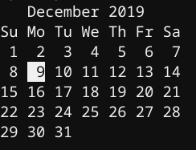

| Name of Command | Usage | Description | Example of Input | Example of Output |
|---|---|---|---|---|
| yes | yes [string] | Repeatedly output a line with all specified STRING(s), or 'y'. | yes |
y y y y y |
| who | who | Print information about users who are currently logged in. | who |
sp1b pts/0 2019-12-02 13:01 (172.19.32.13) sp1a pts/1 2019-12-02 12:21 (172.19.32.32) |
| cd | cd [directory] | Change the current directory to the specified directory. | cd | (changes to home directory) |
| echo | echo [options] | Display the ARGs, separated by a single space character and followed by a newline, on the standard output. | echo hi | hi |
| clear | clear | Clears the terminal. | clear | |
| hostname | hostname | Shows hostname. | hostname | rpi04 |
| cal | cal [options] | Shows calendar. | cal |  |
| cp | cp [filename] [options] | Copies the file to a destination or new filename. | cp myfirstbatchscript mysecondbatchscript | |
| mv | mv [filename] [options] | Moves the file to a destination or new filename. | mv myfirstbatchscript mysecondbatchscript | |
| pwd | pwd | Prints the current working directory. | pwd | /home/sp1b |